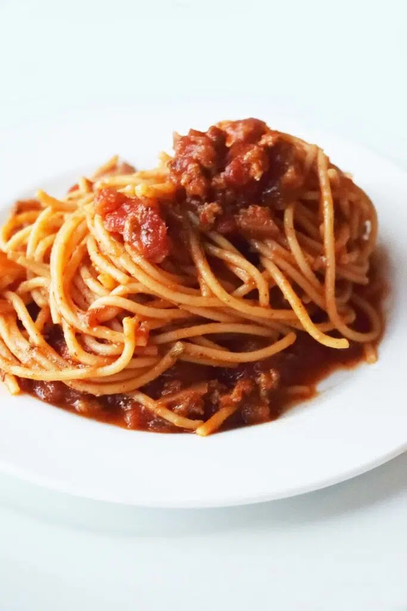

Spaghetti

Description
A classic comfort food recipe for a hearty and flavorful spaghetti dish.
This easy-to-follow recipe combines ground beef, rich pasta sauce, and tender spaghetti noodles.
Ingredients:
- 1 pound ground beef
- 1 jar (24 ounces) your favorite pasta sauce (e.g., Ragu, Prego)
- 1 pound spaghetti
- 1 cup grated Parmesan cheese
- Optional:
- Fresh basil
- Red pepper flakes
- Garlic powder
- Onion powder
Instructions:
- Cook the Pasta:
- Boil a large pot of salted water.
- Cook the spaghetti according to package directions.
- Drain the pasta and set aside.
- Brown the Ground Beef:
- Brown the ground beef in a large skillet over medium heat.
- Drain off any excess grease.
- Combine Sauce and Meat:
- Add the jarred pasta sauce to the skillet with the ground beef.
- Stir to combine and bring to a simmer.
- Season with additional salt, pepper, garlic powder, onion powder, or red pepper flakes to taste.
- Serve:
- Serve the spaghetti with the meat sauce.
- Top with grated Parmesan cheese and fresh basil, if desired.